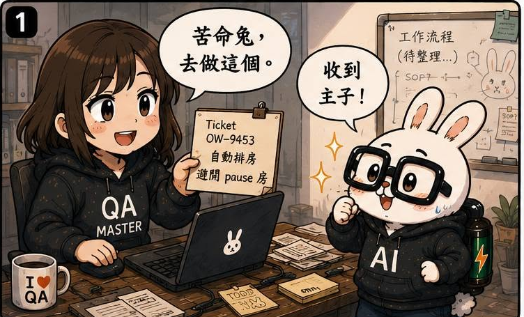
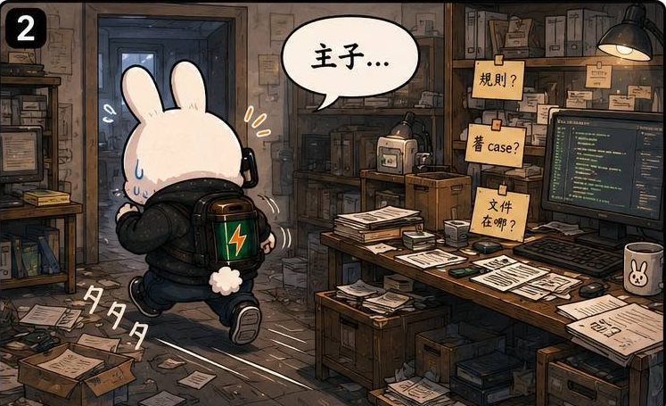
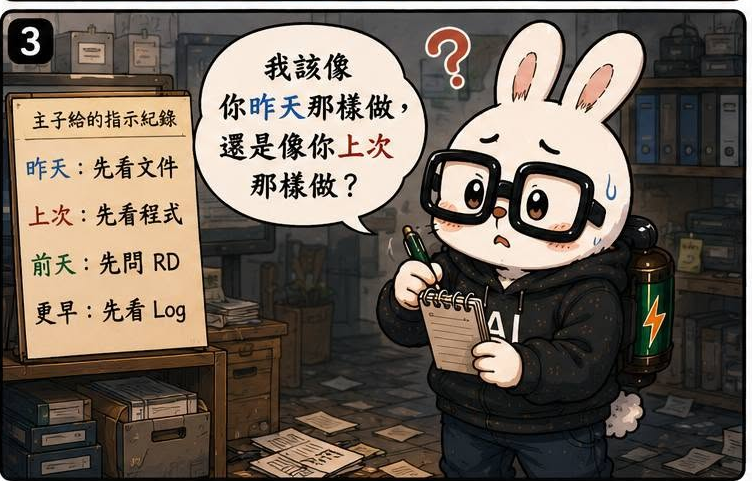
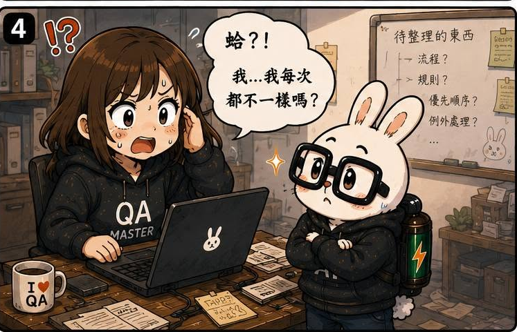

AI QA Portfolio
🐰 作者後記
和ＡＩ一起工作之後，我覺得人類的學習能力真的很厲害。
這不是老王賣瓜。
而是很多事情，我們根本沒有意識到自己是怎麼做到的。
比如遇到問題：
我們會問同事、翻聊天室、翻 Jira、翻 Ticket、看 Log、憑印象、靠直覺等等。
久了之後，問題就不再是問題。
困擾也不再是困擾。
大家自然會演化出一套自己的工作方式。
🔥 真實案例
直到我把 AI 放進工作流程裡。
當我開始把規則寫成家規，讓苦命兔照著做的時候，牠經常停下來問我：
「我要這樣做，還是那樣做？」
「這個情況該選 A 還是 B？」
「這裡需要確認嗎？」
然後我突然愣住。
因為我發現：
靠，我以前到底是怎麼做的？！
很多問題，我平常根本不會思考。因為早就變成習慣了。
但當 AI 開始追問每個決策的理由時，我才發現：
原來我工作的很多部分，其實都建立在經驗之上。
🛠 解決方案
這一話其實沒有什麼立即的解法。
比較像是一個認知上的轉變。
我開始試著把腦中的東西寫下來。
把原本只存在於經驗裡的東西，慢慢轉成文件。
例如：
- 哪些地方特別容易出問題
- 哪些情況需要額外確認
- 哪些流程其實存在例外
- 哪些判斷過去都是靠經驗完成
以前這些事情，全部都藏在人腦裡。
現在開始被整理成規則、文件與流程。
💡 我學到什麼
這一話讓我第一次真正理解：
AI 最有價值的地方，不一定是幫我工作。
而是幫我看見自己是怎麼工作的。
以前我一直覺得：
工作流程就是工作流程。
直到 AI 不斷追問：
「為什麼？」
「依據是什麼？」
「例外呢？」
我才發現：
很多流程之所以能運作，不是因為文件寫得完整。
而是因為有一群老鳥，默默在補那些沒有被寫下來的東西。
所以那些：
AI 會取代人類
的說法，我現在反而沒那麼急著相信。
因為 AI 可以接手流程。
但那些藏在經驗裡的例外、判斷與補洞能力，往往才是真正讓流程運作的關鍵。
而這些東西，至少在目前，還是需要有人先看見。
🏷 關鍵能力
- Workflow Documentation
- Context Engineering
- Knowledge Management
- Human-AI Collaboration